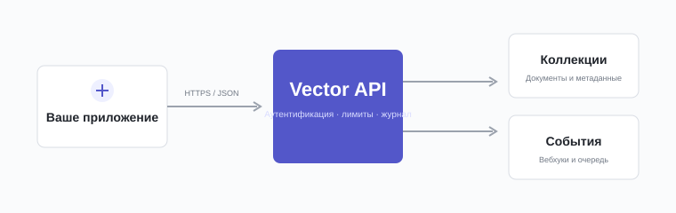

Vector API
Единый интерфейс для документов, коллекций и событий. Создавайте интеграции, которые остаются предсказуемыми при росте данных.
Версия 2.4 стабильна. Для новых интеграций используйте адрес api.vector.example/v2. Версия 1 будет поддерживаться до 1 марта 2027 года.
Как устроен API
Vector использует обычные HTTP-методы и JSON. Каждый объект принадлежит рабочему пространству, а изменения публикуют события, которые можно получить через вебхуки.

Аутентификация
Передавайте ключ проекта в заголовке Authorization. Ключи различаются по окружениям и набору разрешений. Никогда не размещайте секретный ключ в клиентском коде.
/v2/auth/tokenscurl --request POST \
--url https://api.vector.example/v2/auth/tokens \
--header 'Authorization: Bearer vct_live_••••' \
--header 'Content-Type: application/json' \
--data '{"scope":["collections:read"]}'const response = await fetch(url, {
method: 'POST',
headers: { Authorization: `Bearer ${VECTOR_KEY}` },
body: JSON.stringify({ scope: ['collections:read'] })
});response = requests.post(
url,
headers={"Authorization": f"Bearer {VECTOR_KEY}"},
json={"scope": ["collections:read"]}
)Получить коллекции
Метод возвращает доступные коллекции с курсорной пагинацией. Результаты сортируются по дате обновления, от новых к старым.
/v2/collectionsПараметры запроса
limitinteger · optionalЧисло объектов от 1 до 100. По умолчанию 20.
cursorstring · optionalКурсор из поля next_cursor предыдущего ответа.
statusenum · optionalactive archived Фильтр по состоянию.
Ошибки
Неуспешный ответ содержит стабильный машинный код, читаемое сообщение и идентификатор запроса для службы поддержки.
| HTTP | Код | Описание |
|---|---|---|
| 400 | invalid_request | Параметры запроса не прошли проверку. |
| 401 | invalid_token | Ключ отсутствует, отозван или просрочен. |
| 429 | rate_limit | Превышен лимит запросов для проекта. |